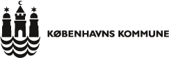

Referencer
Nedenfor er nogle af de opgaver vi har løst. Skulle du være interesseret i at høre nærmere om os eller om opgaverne er du velkommen til at kontakte os.Har i 2012/13 designet og implementeret et fuldt automatiseret driftssetup, der idag driver 100+ servere og services såsom bl.a. www.yousee.tv. Systemet bygger på bl.a. Puppet, Linux.
Lars Vange Jørgensen, Afdelingschef udtaler:
Jeg har svært ved at tro, at der findes et it projekt eller en it afdeling i kongeriget som ikke vil blive bedre af at få Klavs om bord. Klavs nærmest taler og ånder linux, men hans overblik og evne til at arbejde i hele stakken fra applikations udvikling, over netværkskonfiguration, automatisering af udruldninger og server konfiguration og til, om nødvendigt, at skrue batteri backup i din database server, er helt unik og uvurderlig for at vælge de optimale løsninger i en given ramme. Klavs fungerer i YouSee som bindeleddet mellem udvikling og drift, og har med sit enorme engagement og viden flyttet vores grænser for hvad vi er i stand til. Jeg kan egentlig ikke anbefale ham højt nok.

Har i 2012/13 designet og implementeret et fuldt automatiseret driftssetup, der idag driver 100+ servere og services inkl. kommunens selvbetjeningsløsninger mm. Systemet bygger på bl.a. Puppet og Linux. Puppet bruges også på Windows, til at sætte overvågning op automatisk.
Har, i 2009 og frem, i samarbejde med Berlingske Media, designet og implementeret deres nye fuldt automatiseret driftssetup, der idag driver bt.dk, berlingske.dk, business.dk samt mange andre af deres sites, med stor brug af bl.a. Linux og Puppet og derudover har jeg løst diverse system administrations opgaver, såsom design og implementering af backup, evaluering og forbedring af sikkerheden og meget mere.
Casper Bruun Møller, driftsansvarlig hos Berlingske Media udtaler:
Klavs er en utrolig alsidig linux og open source konsulent. Vi har ofte trukket på hans brede vifte af kompetencer, senest i forbindelse med etablering af en ny driftsplatform til vores online medier.
Vi har altid et godt og konstruktivt samarbejde med Klavs, og værdsætter hans evne til på engang at arbejde selvstændigt og bidrage til projektgruppen.
Klavs har altid blik for styrker og svagheder ved de enkelte løsninger. Hans bidrag har sikret os en platform som er stabil, fleksibel, håndterbar og højt ydende.
EnableIT har videreudviklet og forbedret navipartner's driftssetup, som er delvist Linux baseret og udfører løbende nyudviklinger og forbedringer efter firmaets ønsker.
Christian Dam, driftsansvarlig hos NaviPartner udtaler:
Klavs har tilføjet vores setup en systematik, som gør det nemt at drive, uden at gå på kompromis med de fremtidige muligheder for at udvide og udvikle miljøet.
Klavs er pålidelig og hurtigt reagerende hvis det brænder på og vi kan kun anbefale ham. Vi finder ham meget kompetent og er meget tilfredse med samarbejdet.
Har assisteret dem i diverse system administrations opgaver, såsom design og implementering og projektstyring af større netværksrokeringer, sikkerhedsopdateringer og meget mere over en længere årrække.
Har assisteret dem i diverse system administrations opgaver, såsom design og implementering og projektstyring af større netværksrokeringer, sikkerhedsopdateringer og meget mere over en længere årrække.
Kasper Baas, Teamleder & Senior System Administrator udtaler:
Klavs har været og er en uvurderlig hjælp. Med sin dybe Unix forståelse og altid proaktive tilgang. Klavs deltager i planlægning og strategi bla. ved og give overblik og konkret ved og være et stort aktiv ved etableringen af vores automatisering af processer omkring produktions/test miljøer. I kritiske situationer har Klavs deltaget og taget en aktiv rolle med sit store engagement. Jeg vil til enhver tid anbefale Klavs både til sparing og som et aktiv i en hver drifts afdeling.
Har i flere omgange lavet opgaver på Linux, med Apache i forbindelse med forskellige projekter.